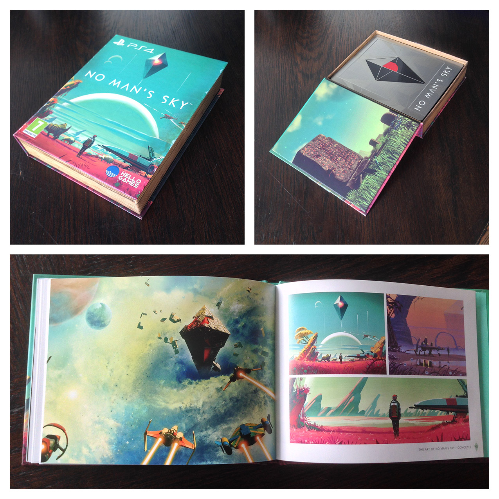

Advent
Its been quite a long wait, but today we finally have our copy of this game in our possession. Emma and I are overjoyed to finally be able to begin our respective journeys.

I know we’re not alone in our excitement; lots of other people have been looking forward to carving their own unique path in this universe as well. There’s also been lots of understandable skepticism as to just how well this kind of epic vision can be pulled off, especially for such a small indie developer. I for one can’t wait to find out just what we actually have in this game.
Obviously its important to have realistic expectations, something that not every fan of this game has done. But I also think it’s unfair to criticize the developers for setting their sites high and describing their work with enthusiasm. I wouldn’t want to discourage the next upstart developer who comes along from trying something equally audacious.
Lots of factors contribute to making a game enjoyable, but what I crave more than anything is the feeling of inhabiting a truly alien world. To explore, to be lost. To feel fear and wonder about the environment around me. Lots of games (and other media) achieve this to varying degrees, but No Man’s Sky might just be in a position to satiate that desire as few others before it have done.
We will soon find out.